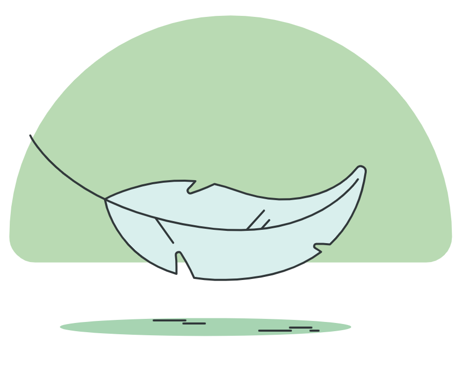

<div class="pt-16 px-4 mx-2 h-screen flex justify-center items-center">
    <!-- Setion Recap -->
    <section class="w-96 h-auto text-center bg-white border border-indigo-800 rounded-lg">
      
      <h2 class="font-medium">Astuce - <span class="text-yellow-500">Pilotage de la résistance</span></h2>
      <p class="mt-2 mx-4 text-sm lg:text-base md:text-base">
        Vous utilisez la résistance électrique d’appoint de votre chauffe-eau solaire,
         qui complète l’apport d’énergie pour chauffer l’eau. Passez en mode AUTO pour
         votre confort ! Ne vous posez plus de question, vous aurez de l’eau chaude en 
         permanence en optimisant votre production solaire !
  
      </p>
      <div class="flex">
        <div class="flex-grow pr-2  mx-4 my-6">
          <button
            type="button"
            class="w-full flex justify-center mt-3 py-3 px-4 border border-transparent text-base font-medium rounded-xl text-gray-400 bg-gray-100 hover:bg-green-700 hover:text-white "
          >Revenir aux paramètres
          </button>
        </div>
      </div>
    </section>
  </div>
  